Im WinLine INFO unter dem Menüpunkt
1 SMART
1 Zeiterfassung
1 Zeiterfassung
kann…
ü der Arbeitstag gestartet
ü der Arbeitstag beendet
ü Pausen erfasst
ü Fehlzeiten erfasst und
ü Projekte gestartet
… werden.
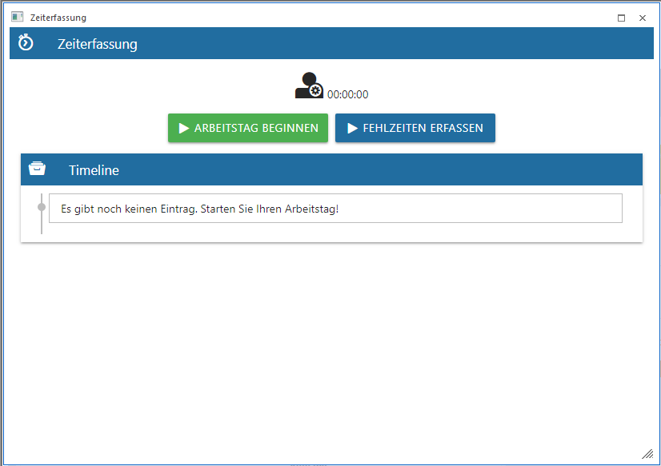
Zeiterfassung
Sobald der Arbeitstag begonnen wird stehen weitere Buttons für die Zeiterfassung zur Verfügung.
Ø Arbeitstag beginnen
Mit dem Arbeitstag beginnen - Button wird der Arbeitstag gestartet. Sobald der Button gedrückt wird geht ein eigenes Fenster auf, wo die Istzeit aus der Auswahllistbox ausgewählt werden kann. In der Auswahllistbox stehen nur jene Zeitarten zur Verfügung, welche als Zeitarttyp "Istzeit" hinterlegt haben. Zusätzlich kann im Feld "Beschreibung" eine Notiz erfasst werden.
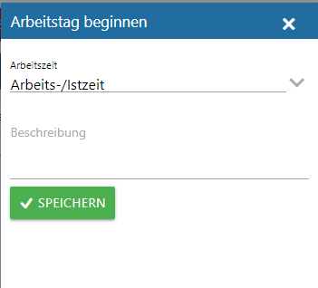
Sobald der Speichern-Button gedrückt wird, wird der Arbeitstag mit dem aktuellen Systemdatum und der aktuellen Systemuhrzeit gestartet.
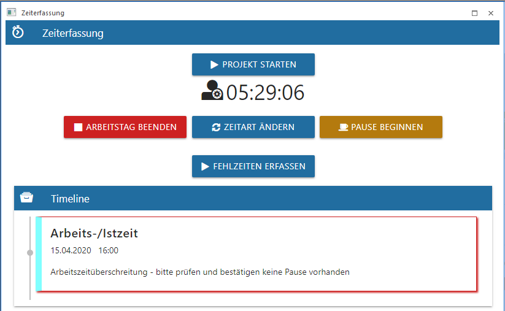
Ø Zeitart ändern
Mit diesem Button kann solange der Arbeitstag nicht beendet ist, die Zeitart gewechselt werden. Beim Ändern der Zeitart geht ein eigenes Fenster, wie beim Arbeitstag beginnen auf, wo jene Zeitarten mit dem Zeitartentyp "Istzeit" ausgewählt werden können. Sobald die Zeitart gewechselt wird, wird die bereits vorhandene Istzeit automatisch beendet und es gibt einen neuen Eintrag unter der Timeline mit der neuen Zeitart.
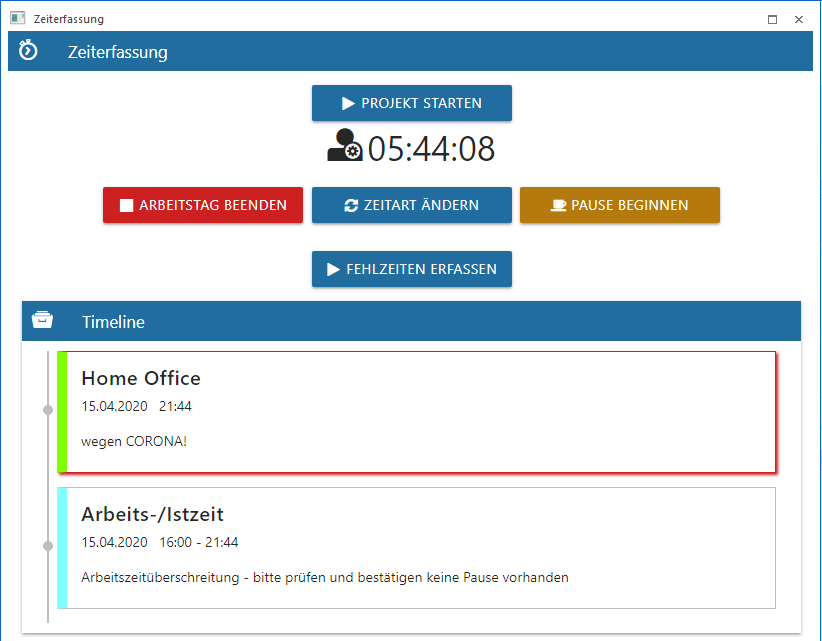
Ø Pause beginnen/beenden
Die Pause kann über den "Pause beginnen" Button gestartet werden. Dabei geht ein eigenes Fenster auf, wo über eine Auswahllistbox die Pause ausgewählt werden kann. Zusätzlich kann noch im Feld "Beschreibung" eine Notiz erfasst werden. Mit dem Speichern-Button wird die Pause begonnen.
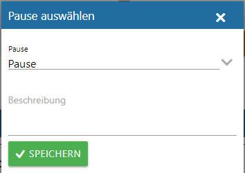
Die Timeline wird um den Eintrag Pause erweitert und die Pausendauer wird mit einen eigenen Pausenzähler gezählt. Die Zeitdauer bzw. die Arbeitszeitdauer werden weiter gezählt.
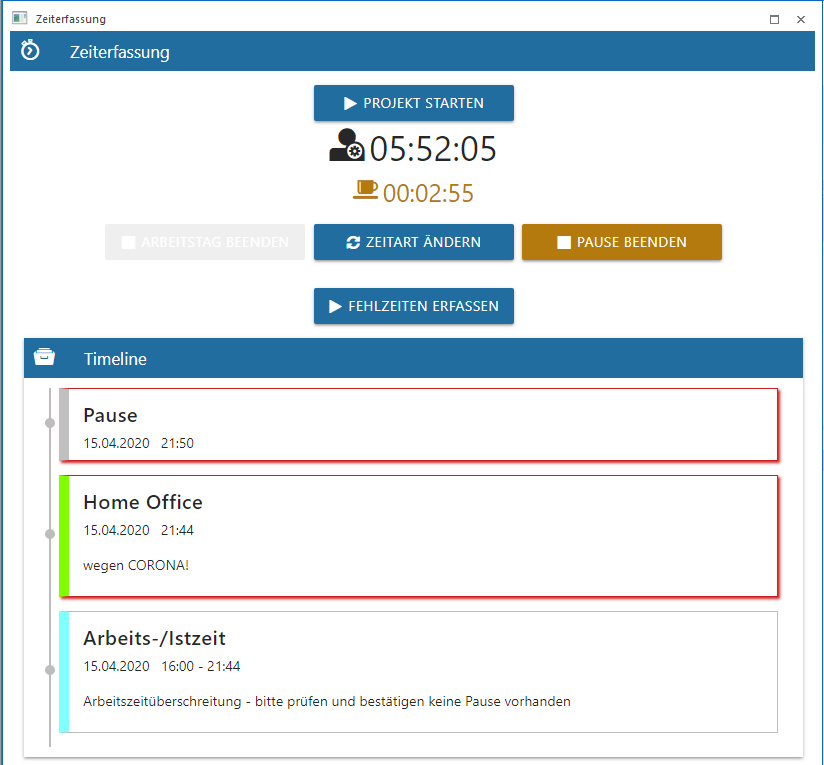
Mit dem "Pause beenden"-Button wird die Pause entsprechend beendet und der Pausenzähler wird nicht mehr angezeigt.
Hinweis
Wenn eine Pause zu spät begonnen wurde oder fehlt, wird 6 Stunden nach dem Arbeitszeitbeginn eine Meldung ausgegeben.
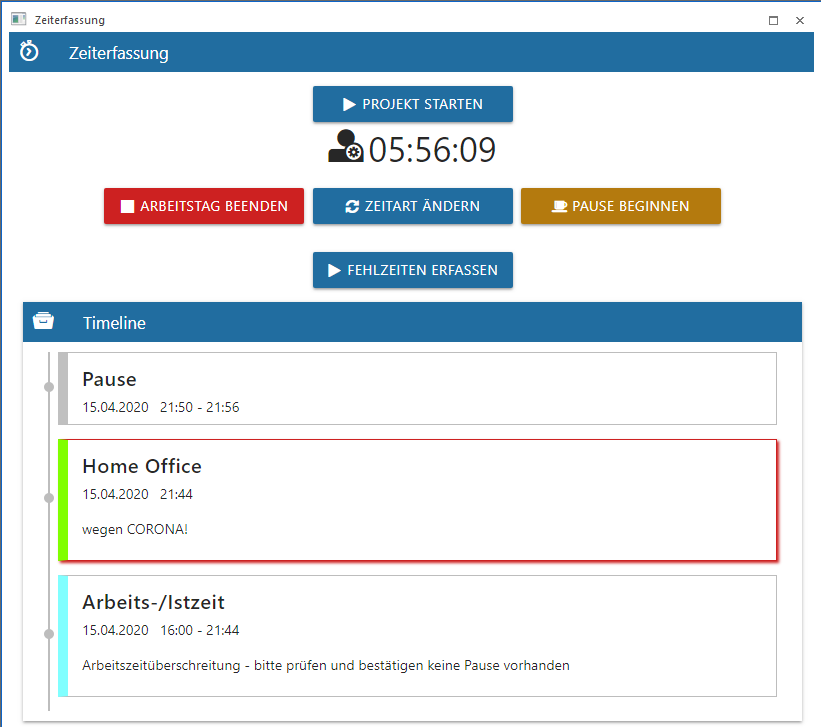
Ø Projekt starten
Über diesen Button kann für ein Projekt die Zeiterfassung gestartet werden. Dabei stehen in der Auswahllistbox nur Projekte zur Verfügung, wenn der Arbeitnehmer bereits die WinLine FAKT den "Projektstamm" oder die "Projektzeiterfassung" aufgerufen bzw. verwendet hat.
Ø Fehlzeit erfassen/beenden
Mit diesen Button können Fehlzeiten erfasst werden. Dabei geht ein eigenes Fenster auf, wo alle Zeitarten mit dem Zeitartentyp "Fehlzeit intern" und "Fehlzeit § geregelte" aus der Auswahllistbox ausgewählt werden können. Zusätzlich kann im Feld "Beschreibung" eine Notiz erfasst werden.
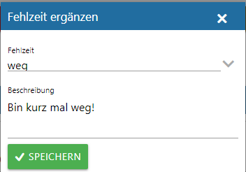
Mit dem Speichern-Button wird der Eintrag entsprechend in der Timeline ausgewiesen.
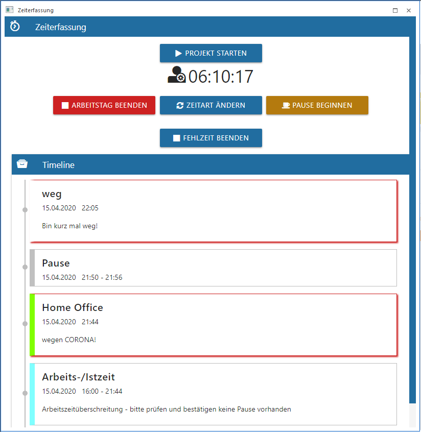
Mit dem "Fehlzeit beenden"-Button wird die Fehlzeit entsprechend beendet.
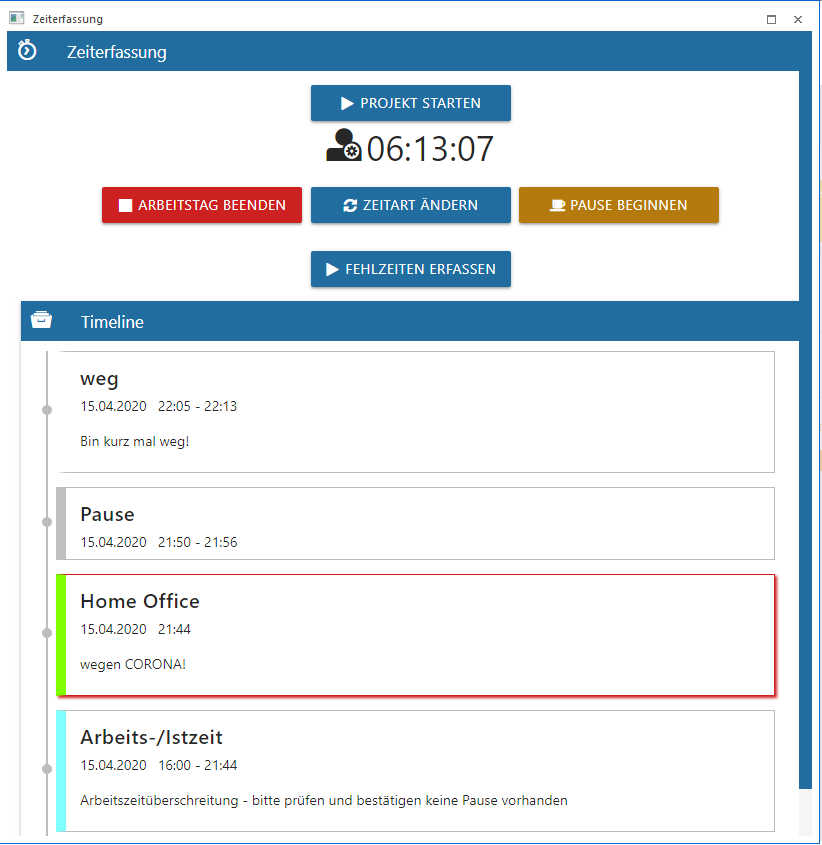
Ø Arbeitstag beenden
Über diesen Button wird der Arbeitstag beendet und die Uhrzeit wird entsprechend im Eintrag eingetragen.
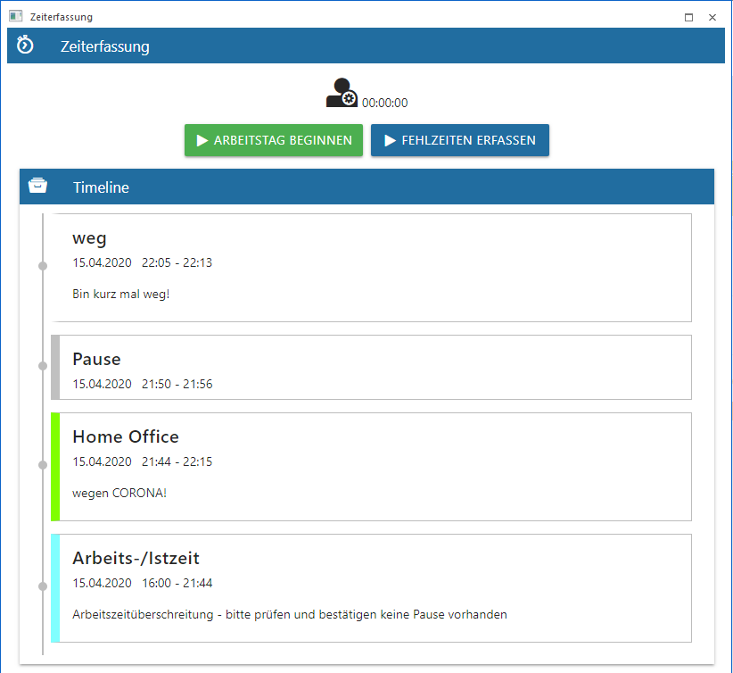
Hinweis
Es wird eine Hinweismeldung nach Überschreitung der Arbeitszeit ausgegeben.
Zeit/Eintrag bearbeiten
Im Menüpunkt "Zeiterfassung" können bestehende Zeiten bzw. Einträge editiert werden. Sobald in der Timeline auf einen Eintrag geklickt wird, geht ein eigenes Fenster auf, wo die Uhrzeiten und Daten entsprechend geändert werden können.
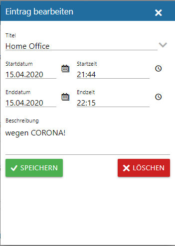
Mit dem Speichern-Button werden die Änderungen übernommen.
Hinweis
Hat der Arbeitnehmer bzw. Mitarbeiter keine Berechtigung um die Zeiten zu ändern, so kann trotzdem der Eintrag bearbeitet werden, dabei wird aber eine Korrektur Anfrage an den Zuständigen Benutzer mit den geänderten Zeiten bzw. Daten geschickt.
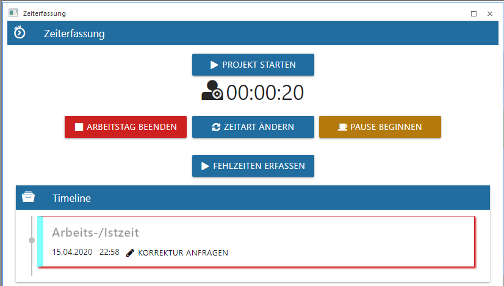
Zeit/Eintrag löschen
Im Menüpunkt "Zeiterfassung" können bestehende Zeiten bzw. Einträge gelöscht werden. Sobald in der Timeline auf einen Eintrag geklickt wird, geht ein eigenes Fenster auf, wo der Eintrag entsprechend gelöscht werden kann.
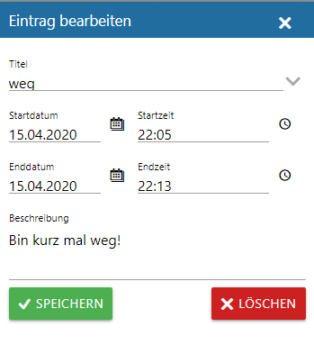
Mit dem Löschen-Button wird der Eintrag gelöscht, dabei wird folgende Meldung noch ausgegeben.
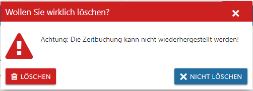
Sobald bei der Meldung der Löschen-Button nochmals bestätigt wird, wird der Eintrag aus der Timeline entfernt.
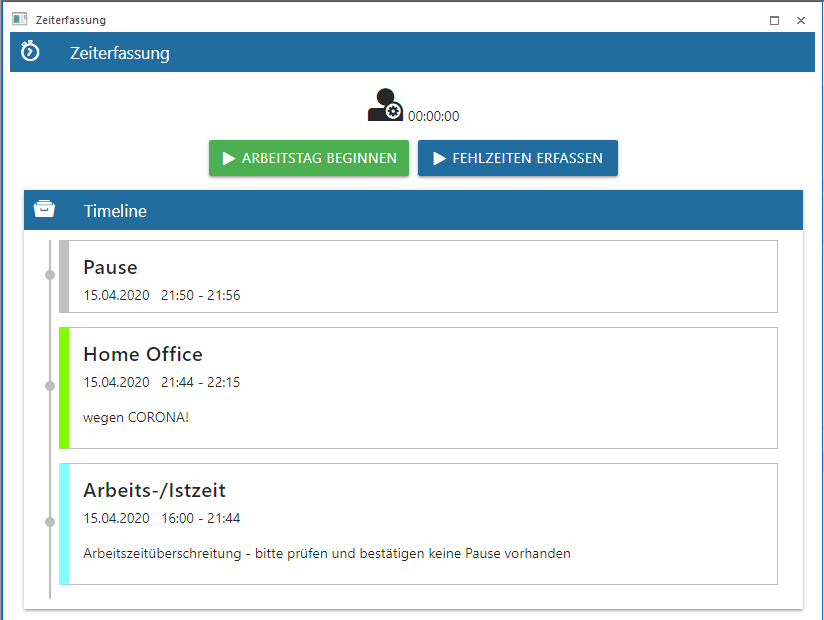
Buttons
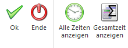
Ø Ok
Der OK-Button hat keine Funktion.
Ø Ende
Mit dem Ende-Button wird das Fenster beendet. Die Arbeitszeit wird solange mit gezählt, solange der Arbeitstag nicht beendet worden ist oder die Maximale Tagesstunden aus dem Arbeitszeitmodell nicht überschritten wird.
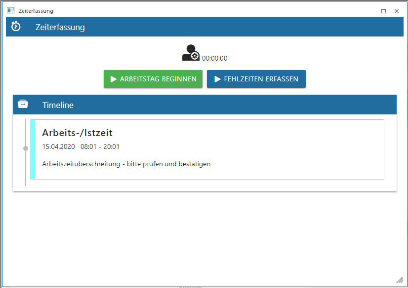
Ø Alle Zeiten anzeigen
Es werden in der Timeline alle Zeiten bis max. dem ersten des vorherigen Monats angezeigt, welche noch nicht über die Arbeitszeitprüfung geprüft und damit nicht festgeschrieben worden sind.
Ø Gesamtzeit anzeigen
Mit diesen Button wird die gesamte Anwesenheitszeit angezeigt. Sollte es Unterbrechungen innerhalb eines Arbeitstages geben z.B.: wurde die Zeitart gewechselt oder der Arbeitstag zwischen durch beendet und wieder begonnen, so wird mit diesen Button die Gesamte Anwesenheitszeit gezählt.